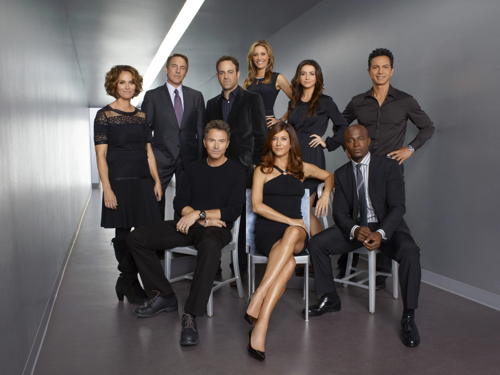
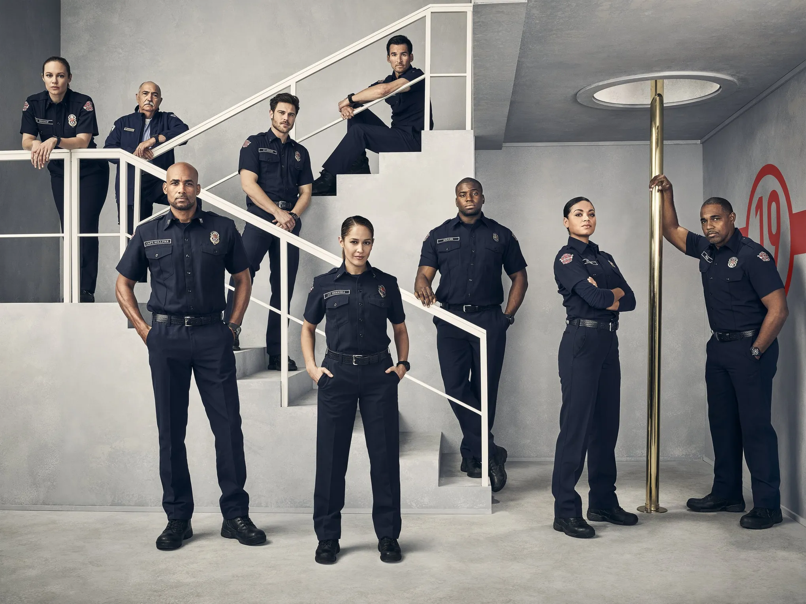

Spin - offs

Private Practice
Sigue la vida de la doctora Addison Montgomery (Kate Walsh) cuando deja el Seattle Grace Hospital para mudarse a Los Ángeles y unirse a una práctica privada. La historia se desarrolla en el Seaside Health & Wellness Center (anteriormente Oceanside Wellness Group). A lo largo de sus seis temporadas, la serie aborda complejos dilemas de salud, medicina alternativa y los dramas personales de su equipo médico, compartiendo además cinco historias cruzadas (crossovers) con Grey's Anatomy antes de llegar a su fin en 2013.

Station 19
Protagonizada por Jaina Lee Ortiz y Jason George, se centra en el equipo de bomberos de la Seattle Fire Station 19. Aunque no ocurre en un hospital, nació en la temporada 14 de Grey's Anatomy tras un impactante incendio. La serie mezcla rescates de alto riesgo con dramas personales y múltiples crossovers médicos a lo largo de sus siete temporadas.